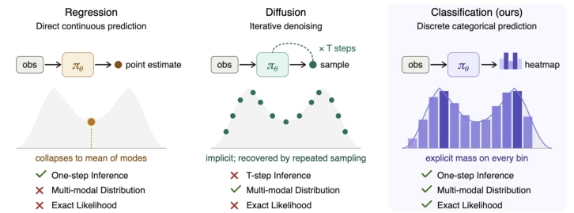
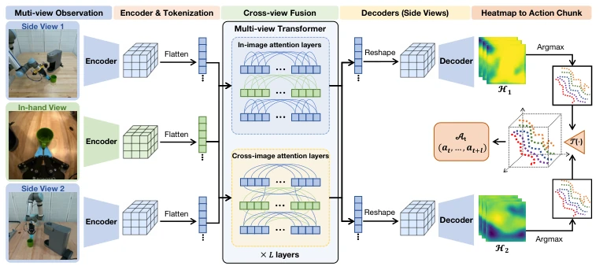
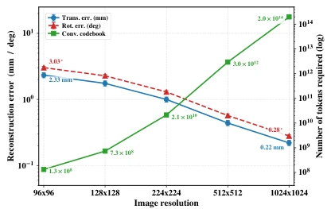
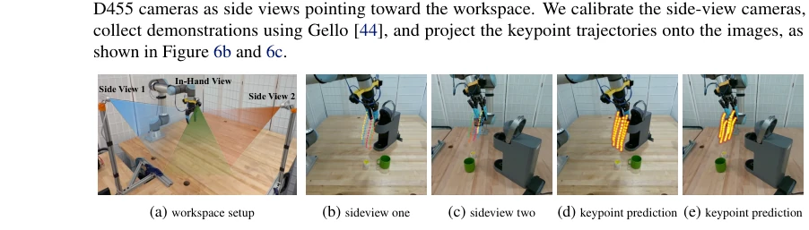
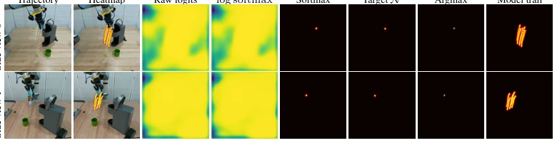
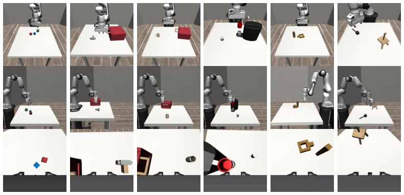

这篇论文把 3D 操作策略学习硬生生塞进了图像像素分类的框里，听起来像是给回归问题穿了件分类的马甲。虽然作者声称避免了离散化带来的组合爆炸，也解决了扩散策略的慢速采样问题，但本质上还是通过高斯软标签在像素空间做分布拟合。优点确实明显，单前向传播比 Diffusion 快得多，且毫米级精度在仿真和真机上都有体现。不过，把 3D 动作投影到 2D 再反投影，中间必然存在深度歧义和校准误差，论文虽提到鲁棒性，但真实世界相机标定不准时的表现仍需观察。此外，X-Net 架构虽然融合了多视角，但计算量并不小，且对并行夹爪的依赖限制了灵巧手的应用。虽然精度理论分析显示分辨率提升可线性改善误差，但实际部署中相机畸变和标定误差可能抵消这一优势。总的来说，这是一个在精度和速度之间找平衡的实用主义方案，而非理论上的颠覆。
This paper forcibly constrains 3D manipulation policy learning into the framework of image pixel classification, sounding like dressing a regression problem in a classification guise. Although the authors claim to avoid the combinatorial explosion caused by discretization and solve the slow sampling problem of diffusion policies, essentially it remains distribution fitting in pixel space via Gaussian soft labels. The advantages are indeed significant; single forward propagation is much faster than Diffusion, and millimeter-level accuracy is demonstrated in both simulation and physical robots. However, projecting 3D actions to 2D and then back-projecting inevitably introduces depth ambiguity and calibration errors in between. Although the paper mentions robustness, the performance under inaccurate real-world camera calibration still requires observation. Furthermore, although the X-Net architecture fuses multi-views, the computational load is substantial, and the dependence on parallel grippers limits the application of dexterous hands. Although theoretical analysis of precision indicates that resolution improvement can linearly reduce error, in actual deployment camera distortion and calibration errors may offset this advantage. Overall, this is a pragmatic solution seeking a balance between accuracy and speed, rather than a theoretical subversion.
The core challenge of robot manipulation policy learning lies in the high dimensionality and multimodality of the action space. Existing regression methods such as ACT [8] use MSE loss, easily collapsing to the mean in multimodal solutions, resulting in action blurring. Methods based on discrete Tokens such as OAT [5] or RT-2 [6], although borrowing from the success of LLMs, lead to combinatorial explosion of vocabulary size when binning continuous actions independently; for example, 6-DoF actions requiring only 10 bins necessitate 10^6 classes, making it difficult to cover fine manipulation. Diffusion policies such as DiffPo [13] can model multimodal distributions but rely on multi-step denoising, resulting in slow inference speed. This paper aims to resolve these trade-offs: retaining the geometric structure of continuous actions while avoiding the vocabulary explosion of discretization, and simultaneously pursuing faster inference speed than diffusion models.

Figure 1: Comparison of different policy-learning frameworks. Regression methods can easily collapse to the mean of multiple modes. Diffusion methods can, in principle, capture multi-modal distributions, but require multiple denoising steps to generate a single sample and sampling-based procedures to recover the full distribution. In contrast, our method supports single-pass inference and captures the full action distribution using a dense map that represents actions geometrically.
方法Method
整体流程将 3D 动作序列转化为 2D 图像空间的热力图分类问题。首先，将末端执行器位姿分解为 5 个 3D 关键点，通过相机投影矩阵映射到多视角图像平面，生成高斯软标签作为热力图。网络架构 X-Net 包含 U-Net 编码器和多视图 Transformer (MVT)，MVT 通过片内和片间注意力层融合多视角特征。解码器输出每个关键点在每个时间步的像素概率分布，训练使用交叉熵损失。推理时，对热力图取 Argmax 得到 2D 像素坐标，再通过三角测量重建 3D 关键点轨迹，最后根据几何关系反解出位姿 (T, R, w)。这种表示将动作预测与视觉观测对齐在同一个像素空间，支持等变数据增强。X-Net 设计允许不同数量相机输入，编码器采用 ResBlocks 下采样，解码器上采样，中间通过 Transformer 进行跨视图通信。损失函数采用像素级交叉熵，鼓励模型预测高斯分布而非单点，从而提供平滑梯度。动作提取器通过几何约束将关键点轨迹还原为平移、旋转和夹爪开度，确保物理可执行性。
The overall process converts 3D action sequences into a heatmap classification problem within the 2D image space. First, the end-effector pose is decomposed into 5 3D keypoints, mapped to multi-view image planes via camera projection matrices, generating Gaussian soft labels as heatmaps. The network architecture X-Net comprises a U-Net encoder and a Multi-View Transformer (MVT), where the MVT fuses multi-view features through intra-view and inter-view attention layers. The decoder outputs the pixel probability distribution for each keypoint at each timestep, trained using cross-entropy loss. During inference, Argmax is taken on the heatmap to obtain 2D pixel coordinates, followed by reconstructing the 3D keypoint trajectory via triangulation, and finally recovering the pose (T, R, w) based on geometric relationships. This representation aligns action prediction and visual observation within the same pixel space, supporting equivariant data augmentation. The X-Net design allows for varying numbers of camera inputs; the encoder employs ResBlocks for downsampling, the decoder for upsampling, and the middle section uses Transformers for cross-view communication. The loss function adopts pixel-level cross-entropy, encouraging the model to predict Gaussian distributions rather than single points, thereby providing smooth gradients. The action extractor restores the keypoint trajectory to translation, rotation, and gripper aperture through geometric constraints, ensuring physical executability.

Figure 2: Architecture of Action Map Policy. The left branches take one in-hand image and two side-view images as input. The center features a multi-view transformer that enables communication between the in-hand features and the side-view context features. The right branch consists of two decoders that generate heatmaps of keypoints across the temporal horizon.

Figure 4: Reconstruction error (left) and conven- tional codebook size (right) vs. image resolution. The codebook grows by six orders of magnitude as resolution increases.
On the MimicGen simulation benchmark, AMP outperforms baselines such as DiffPo and ACT in 5 out of 6 tasks, with an average success rate improvement of 20.7%. Real-world experiments include coffee making, toasting bread, and steaming eggs, where AMP achieves a completion rate of 80%-90%, far exceeding DiffPo's 25% and ACT's 15%-35%. Inference speed is 13.80ms, significantly faster than DiffPo's 93.53ms. In spatial reasoning tests, facing four identical objects with only a laser pointer indicating the target, AMP achieves a 100% success rate, while DiffPo reaches only 20%, demonstrating its ability to capture fine-grained visual cues. Ablation experiments indicate that removing embedded cameras or hard labels significantly degrades performance, and equivariant data augmentation is crucial for improving generalization.

Figure 6: Real-world system setup, ground-truth keypoint projection visualization, and action map prediction.

Figure 11: Heatmap prediction visualization on the MAKE-COFFEE task, evaluated at the midpoint of a downward grasp toward the coffee pod. Each row corresponds to one calibrated side view. The columns show the dense prediction process, including the raw decoder output, cross-entropy supervision, spatial softmax, argmax pixel selection, and the final horizon-wide trajectory. Columns (1)–(2) summarize the full 5×12 keypoint-step output of the policy, while Columns (3)–(7) visualize the image-space distribution of a single keypoint.
其他图片Other Figures

Figure 10: Simulation camera setup for the six MimicGen tasks. The first row shows side-view camera 1, the second row shows side-view camera 2, and the last row shows the in-hand view. All images are rendered at a resolution of 224 × 224.